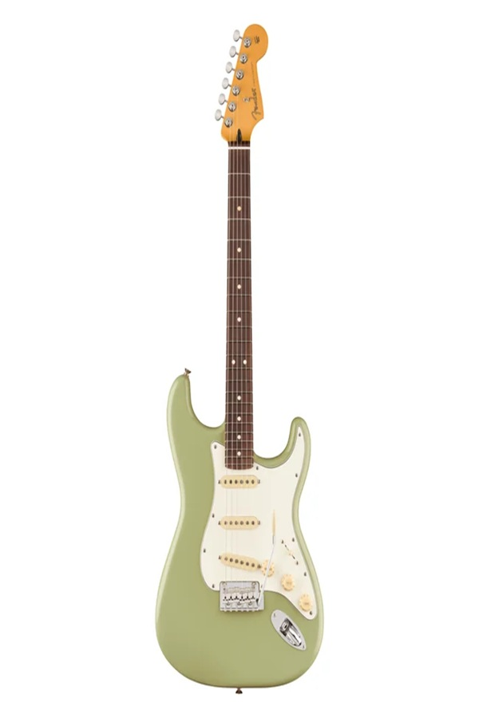

Juhend
Pildil on esile toodud 6 erinevat elektrikitarri osa, kasutades kolme erinevat kujundit (rect, circle, poly). Vali huvipakkuv piirkond!
Klõpsa pildil olevatele kitarri osadele, et näha detailset selgitust.

Pildil on esile toodud 6 erinevat elektrikitarri osa, kasutades kolme erinevat kujundit (rect, circle, poly). Vali huvipakkuv piirkond!